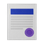

1. kérdés a 3-ból
Ebből kikeressük az adataidat, neked csak rá kell bólintanod.
12345678-1-41

Ez a te vállalkozásod?
Minta Márta e.v.
1136 Budapest, Példa utca 7.
Ebből kikeressük az adataidat, neked csak rá kell bólintanod.

Minta Márta e.v.
1136 Budapest, Példa utca 7.